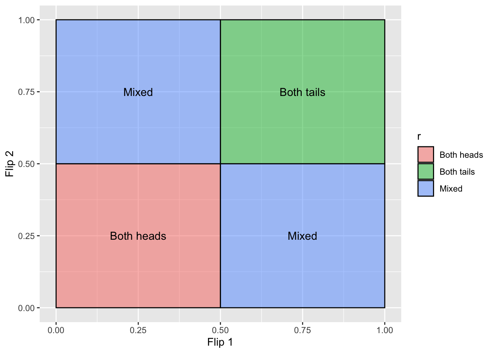
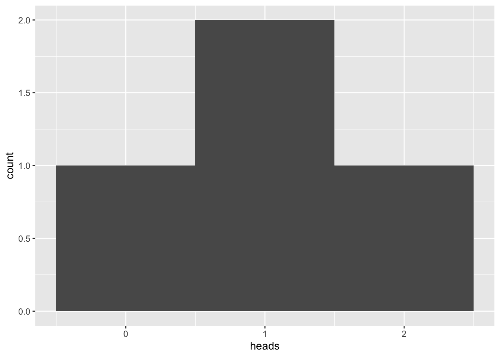
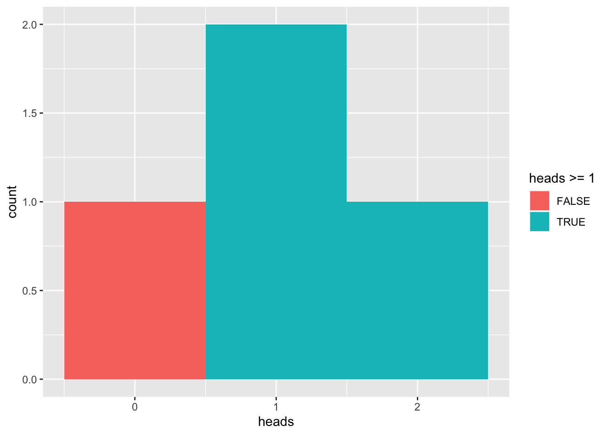
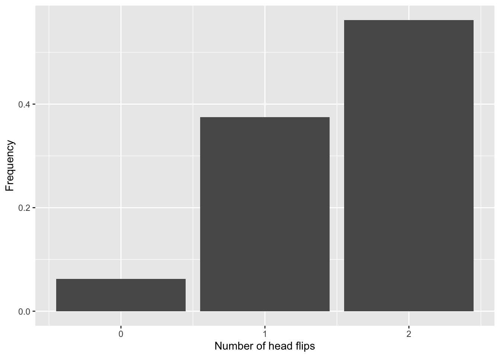
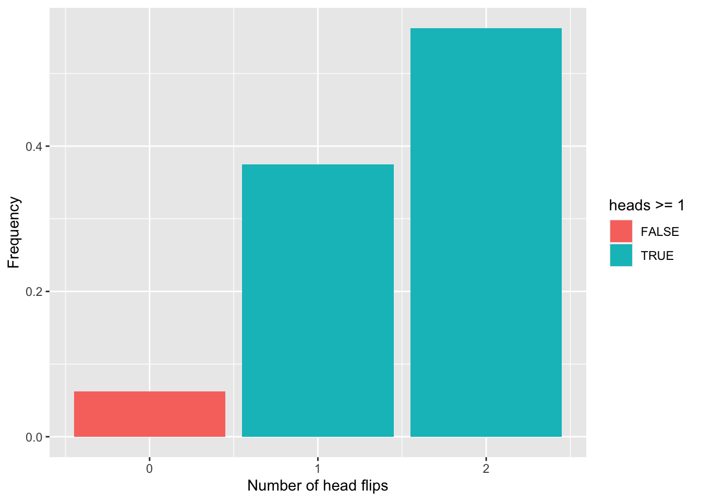

Binomial Distribution (R)
Red means that the page does not exist yet
Orange means that the page is started
What is a Binomial distribution?
Imagine that you want to predict the likelihood of flipping a coin on heads or tails a certain number of times in a row. The outcome of each coin flip is binary, i.e. there is only 1 possible outcome out of 2 options. If this isn’t a biased coin, we can calculate some basic expectations about what will happen after 2 flips of the coin:
Each flip of the coin has a 50% or 0.5 chance of landing on Heads.
If we wanted to calculate the likelihood of 2 flips of heads, there’s a 0.5 chance we get the first heads flip, and then another 0.5 chance we’ll get the second head flip. To summarise this, we can multiply both 0.5 chances together to get .025.
To summarise the likelihood of all combinations we could make the following table:
| First flip and likelihood | Second flip and likelihood | Overall likelihood |
| Heads (.5) | Heads (.5) | 0.5 * 0.5 = .25 |
| Heads (.5) | Tails (.5) | 0.5 * 0.5 = .25 |
| Tails (.5) | Heads (.5) | 0.5 * 0.5 = .25 |
| Tails (.5) | Tails (.5) | 0.5 * 0.5 = .25 |
| Likelihood of one of the above happening | .25 + .25 + .25 + .25 = 1 |
library(ggplot2)
d=data.frame(
x1=c(0, .5,0, .5),
x2=c(0.5,1 ,.5,1),
y1=c(0, .5,.5,0),
y2=c(0.5,1 ,1 ,.5),
# t=c('Both heads','Both tails','Mixed','Mixed'),
r=c('Both heads','Both tails','Mixed','Mixed'))
ggplot() +
scale_x_continuous(name="Flip 1") +
scale_y_continuous(name="Flip 2") +
geom_rect(data=d, mapping=aes(xmin=x1, xmax=x2, ymin=y1, ymax=y2, fill=r), color="black", alpha=0.5) +
geom_text(data=d, aes(x=x1+(x2-x1)/2, y=y1+(y2-y1)/2, label=r), size=4) 
Out of these 4 combinations, the likelihood of each of them in their precise order is exactly .25 (or a 25% chance). However, we often don’t care about order, so the odds of getting 1 head and 1 tail flip would be .25 + .25 = 50% chance. This allows us to create a very simple binomial distribution of head flips:
library(ggplot2)
coin_flips <- data.frame(
first = c("heads","heads","tails","tails"),
second = c("heads","tails","heads","tails"),
heads = c(2,1,1,0)
)
ggplot(coin_flips, aes(heads)) + geom_histogram(bins = 3)
We can calculate the likelihood of how many heads you will flip using the above distribution. Let’s say that you wanted to know the likelihood of getting at least 1 flip of heads:
ggplot(coin_flips, aes(heads, fill = heads >= 1)) + geom_histogram(bins = 3)
You can calculate the area under this distribution this is true for, and divide it by the total area of the distribution:
sum(coin_flips$heads >= 1) / length(coin_flips$heads)[1] 0.75This suggests you have a 75% chance of flipping heads at least once. Looking at the table above will confirm that there is ony 1 out of 4 combinations in which you never flip heads, also supporting the fact that you will flip heads at least once the other 3 out of 4 times (i.e. 75% of the time).
What if the odds of each option are not equal to each other (e.g. you have a biased coin)
Let’s now imagine that we have a coin that will flip heads 75% of the time, and tails 25% of the time. It’s a bit more complicated to draw a distribution that captures this as the likelihood of either side is no longer equal.
biased_coin_flips <- data.frame(
first_flip = c("heads","heads","tails","tails"),
first_likelihood = c(.75,.75,.25,.25),
second_flip = c("heads","tails","heads","tails"),
second_likelihood = c(.75,.25,.75,.25),
heads = c(2,1,1,0)
)
biased_coin_flips$outcome_likelihood = biased_coin_flips$first_likelihood *
biased_coin_flips$second_likelihood
# Checking if all outcomes captured (should get 1) and no overlapping outcomes (should not get more than 1). See the page on *probabilities* for more information
sum(biased_coin_flips$outcome_likelihood)[1] 1knitr::kable(biased_coin_flips)| first_flip | first_likelihood | second_flip | second_likelihood | heads | outcome_likelihood |
|---|---|---|---|---|---|
| heads | 0.75 | heads | 0.75 | 2 | 0.5625 |
| heads | 0.75 | tails | 0.25 | 1 | 0.1875 |
| tails | 0.25 | heads | 0.75 | 1 | 0.1875 |
| tails | 0.25 | tails | 0.25 | 0 | 0.0625 |
If we want a histogram, we can get a sum of the outcome_likelihood for each number of heads (thus ignoring the order):
biased_heads <- data.frame(
heads = c(0,1,2),
freq = c(
sum(biased_coin_flips$outcome_likelihood[biased_coin_flips$heads == 0]),
sum(biased_coin_flips$outcome_likelihood[biased_coin_flips$heads == 1]),
sum(biased_coin_flips$outcome_likelihood[biased_coin_flips$heads == 2])
)
)
ggplot(biased_heads, aes(x=heads,y=freq)) +
geom_col() +
xlab("Number of head flips") +
ylab("Frequency")
How likely am I to get at least 1 head flip with this biased coin?
sum(biased_heads$freq[biased_heads$heads >= 1])[1] 0.9375Which can be visualised as:
ggplot(biased_heads, aes(x=heads,y=freq, fill = heads >= 1)) +
geom_col() +
xlab("Number of head flips") +
ylab("Frequency")
Bivariate distributions
Note that the above distributions we’ve calculated, and thus the p-values associated with certain outcomes (or greater or lesser), use the same principles for other distributions such as t-distributions.
Question 1
Do binomial distributions only work if there is an equal likelihood of either outcome?
Question 2
What is the likelihood of flipping 2 heads in a row if your coin is .6 biased towards heads